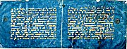
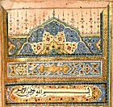

Gallery
Calligraphic Tradition in Islam
 Table of contents
Table of contents
The Calligraphic Tradition in Islam*
|
“He who taught the use of the pen, taught man that which he knew not.”
Qur’an, Sura Al-‘Alaq (96:4-5) |
Calligraphy has developed as a very important artform and devotional activity in Islam since it is regarded as one means by which the divine word of God can be recorded. It has permeated all aspects of creative expression in Muslim culture, including art and architecture, and is consequently more than merely a visual means of reminding the viewer of the Qur’an and the word of God.
|
“Beauty of script is incumbent upon you for it is one of the keys of mankind’s daily bread.”
Attributed to the Prophet Muhammad |
In addition, the calligrapher (in Arabic al-khattat) was afforded a higher social status than for example the gilder, binder or painter. This elevated social status accorded to the calligrapher was reinforced by the fact that many rulers in Islam were keen to compete in the artform with professional calligraphers. It is not an exaggeration to say that calligraphy is considered by many to be the very heartbeat of Islam.
|
“Writing is spiritual geometry, wrought by a material instrument.”
Al-Amuli in his Nafa’is al-Funun |
The relevance of geometry to Islamic calligraphy cannot be overstated. A complex set of geometric rules was laid down by Ibn Muqlah (d. 940). These were based on the rhombic dot as the unit of measurement. Each letter was rigorously disciplined and related to each other (the other elements consisting of the first letter of the Arabic alphabet, the alif, and the circle). Symmetry, harmony and pattern are essential components in the development of Islamic calligraphy in its many forms.
|
“Writing is a tongue to which the heart runs and is the depository of secrets, the investigator of news and the preserver of historical memorials.”
Al-Jahiz |
The printing of the Arabic script did not become widespread until the 19th century with the advent of the first capable presses in Beirut and Cairo. This may explain why the art of calligraphy has remained so much more prized throughout the Islamic world compared to Europe where printing had begun to replace manuscripts during the 15th century. Though a number of books were printed using the Arabic script during the 16th and 17th centuries, particularly in Italy and the Low countries, there was an initial reluctance among Muslims to use this new process.
|
“Handwriting is jewellery fashioned by the hand from the pure gold of the intellect.”
Abu Hayyan al-Tawhidi |
Fatimids; North Africa; 3rd/9th to 4th/10th century
30.5 x 40.4cm; 15 lines per pages; gold kufic script
Ms 1999.030
|

Bifolium of the “Blue Qur’an”  The left pane  The right pane  Text (detail) |
This bifolium contains gold kufic script on blue dyed vellum with the marginal roundels painted in silver. Over the past 1000 years, the silver has oxidised, but the magnificence of this piece is still evident. The format of the leaves is very much in the North African tradition where the kufic script is essentially horizontal. Later, with the development of more vertical scripts, the Arab manuscripts assumed a page form more familiar to readers today. Symbolically, blue is the colour of the sea, the sky and by extension God’s infinite mercy towards mankind. It also may have a connection with colours used by Byzantine craftsmen in the production of royal gifts. Gold is a colour associated with richness and royalty and the combination of blue and gold is frequently found in Qur’an frontispieces. The text of these leaves is from Sura 25, al-Furqan, 48-60 and Sura 26, al-Shu‘ara’.
It used to be thought that this work had been ordered by the ‘Abbasid caliph al-Ma’mun (d. 833) for his father Harun al-Rashid (d. 809) in Mashhad, but recent scholarship is agreed that this Qur’an, almost certainly, is from North Africa. An inventory of the library compiled in 693 AH /1293 CE describes a Qur’an written in gold on blue parchment though this had five lines per page whereas this example has fifteen. Up to seventy-five folios were retained in Qayrawan during the 1950s. A section of this manuscript is in the National Institute of Art and Archaeology in Tunis and there are many leaves in museums and private collections including that of Prince Sadruddin Aga Khan. This is an exceptionally rare example of a bifolium which illustrates the way in which this book was put together. In fact on some of the leaves, the traces of the ruled lines made with a mastara to guide the calligrapher may be seen. |
Central Asia; 1100/1688; 35.2 x 22 cm; black naskhi script
Ms. 910 Ar
|
Qur’an from Central Asia 
|
This Qur’an is written in black naskhi script with the Arabic verses divided into single words and short phrases followed by a Persian translation and commentary. From Central Asia, it is one of two volumes and is dated 1100 AH /1688 CE. It contains many decorative features, such as the colours of the marginal ornaments, usually associated with book production from the Indian subcontinent. This is unsurprising since there was considerable trading activity between Badakhshan, where this manuscript probably originated, and India. It is also interesting that the Persian text is integrated within the Arabic, which is presented in larger bolder black script. It is more usual to find interlinear Persian and Arabic scripts which, from a calligraphic and practical point of view, would have been much more straightforward to produce.
|


Album of calligraphic exercises
Probably copied by Ahmad Nayrizi in 12th/18th century
24.5 x 14 cm; naskhi script
Ms. 160 Ar
 |
 |
 |
 |
Containing thirty-four panels of Arabic calligraphy mounted on card in a concertina form, the album is written in naskhi script throughout, perhaps by Ahmad Nayrizi, the famous Persian practitioner of naskh in the 12th/18th century. There is no date on this work but this is not unusual since in many ways this may be seen as an example of pages of calligraphic practice sheets.
Copied in Sha‘ban 1029/1620
25 x 14cm; black and red ink with diagrams illustrating astronomical elements
Ms. 596 Ar
 Sharh al-Tadhkira Sharh al-Tadhkira (text close-up)
|
Nasir al-Din al-Tusi (d. 1274) was one of the major intellectual figures of 7th/13th century Islam and his extensive writings included works on philosophy, theology, mathematics, physics and astronomy. After completing his formal education, al-Tusi found patrons at Ismaili courts in Persia beginning sometime in the 620s/1220s. For the next twenty-five years, al-Tusi stayed in Quhistan and at the Ismaili fortress of Alamut, using its rich library to write some of his most important scientific and philosophic works. This manuscript, a commentary on one of Nasir al-Din al-Tusi's works on astronomy, is by the 16th century scholar, ‘Abd al-‘Ali al-Birjandi (d. 934/1528), and is among a number of scientific works in the Institute’s Library. It was copied in Sha‘ban 1029/1620. The text is written throughout in black and red ink with diagrams illustrating many of the astronomical elements discussed.
|
Further Resource and Reading Material
Baer, Eva. Islamic Ornament. New York University Press: New York, 1998.
Imamuddin, S.M. Arabic Writing and Arab Libraries. Ta-Ha: London, 1983.
Kelk-e Meshkin. A Selection of the Works Exhibited at the First Islamic Calligraphy Festival. Iran Visual Arts Association: Tehran, 1997.
Khatibi, Abdelkebir. The Splendour of Islamic Calligraphy. Thames and Hudson: London, 1976.
Lings, Martin. The Quranic Art of Calligraphy and Illumination. Scorpion: London, 1987.
Nasr, Seyyed Hossein. Islamic Art and Spirituality. Golgonooza: Ipswich, 1987.
Safadi, Yasin Hamid. Islamic Calligraphy. Thames and Hudson: London, 1978.
Schimmel, Annemarie. Calligraphy and Islamic Culture. New York University Press: New York, 1984.
Scott, Michael. “In the Beginning was the Word.” Vancouver Sun October 20, 2001: D10-D11. [PDF 2.5 Mb, with permission of Vancouver Sun.]
Welch, Anthony. Calligraphy in the Arts of the Muslim World. Asian Society: Austin, 1979.
This is an adapted and edited version of a presentation given by the late Dr Duncan Haldane at the opening of the exhibition “The Spirit of Islam: Experiencing Islam through Calligraphy” at the University of British Columbia, Canada on October 21, 2001.
 Gateways
Gateways